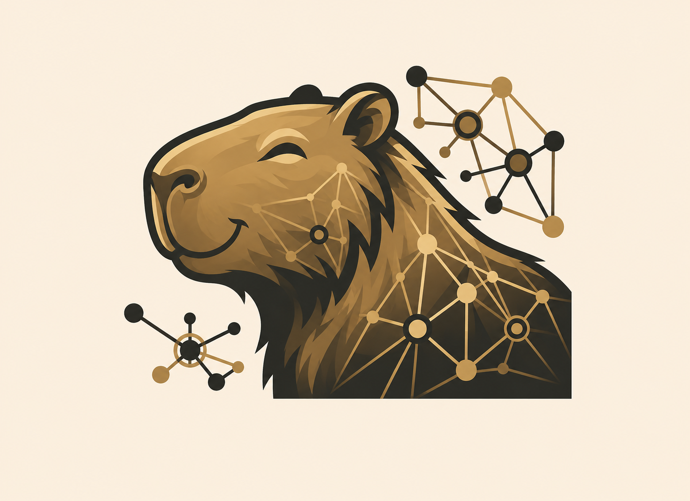

Do armazenamento dos seus arquivos até a segurança da rede, cada serviço funciona junto com os outros, gerenciado pela nossa equipe. Você não precisa entender de TI para isso. É esse o ponto.
Cada serviço resolve um problema real do dia a dia, e todos eles funcionam juntos para sua comodidade.
Os documentos da empresa num só lugar, acessíveis de qualquer computador. Acabou o "tá na minha máquina", o arquivo perdido e a versão errada. Todo mundo trabalha com os mesmos arquivos, sempre atualizados.
Sua equipe entra no sistema da empresa de casa, do aeroporto ou de qualquer lugar, com a mesma segurança de estar dentro do escritório. Sem gambiarras, sem expor nada na internet.
Cada pessoa acessa só o que precisa. Quando alguém entra na empresa, cria o acesso. Quando sai, bloqueia em segundos. Simples, organizado, e em conformidade com a LGPD.
Acontece todo dia, sozinho, sem ninguém lembrar de fazer. Se algo der errado, computador quebrado, arquivo deletado, qualquer coisa, a gente recupera. Seus dados ficam protegidos mesmo que você nunca pense nisso.
Acompanhamos a saúde da sua infraestrutura durante o horário comercial e identificamos problemas antes que eles cheguem até você. Quando algo precisa de atenção, a gente já sabe.
Seu sistema, aplicativo ou site rodando em ambiente dedicado, estável e gerenciado. Sem dividir servidor com desconhecidos, sem queda na hora errada.
Uma barreira entre a sua rede e a internet. Acesso controlado, tráfego suspeito bloqueado, sua infraestrutura invisível para quem não deveria chegar perto.
Quando algo precisa de atenção, você abre um chamado e a gente resolve, com prazo definido e acompanhamento do início ao fim. Sem ficar esperando resposta ou explicando o problema três vezes.
Você sabe quem acessou o quê e quando. Histórico completo, relatórios prontos, conformidade com a LGPD sem precisar contratar um especialista para isso.
Proteção ativa contra invasões, vazamentos e ameaças digitais. Se algo estranho acontecer na sua rede, o sistema detecta e age, antes que o problema se espalhe.
Atualizações, ajustes e correções feitas com antecedência, antes de virarem incêndio. Sua operação continua rodando sem aquela sensação de que tudo pode quebrar a qualquer momento.
A estrutura de rede da sua empresa funcionando de forma organizada e segura, sem você precisar comprar equipamento ou manter alguém só para cuidar disso.
A Capycloud não vende produtos avulso. Cada camada se apoia na anterior.
Você contrata o que faz sentido para o momento da sua empresa.
É o ponto de partida: seus arquivos centralizados, acessos organizados, rede segura e sistemas hospedados. Sem essa fundação, o resto não funciona. Com ela, tudo se conecta.
Visibilidade do que está acontecendo na sua infraestrutura. A gente acompanha, você recebe um aviso quando algo precisa de atenção, durante o horário comercial.
Rotinas que rodam sozinhas: atualizações, manutenção preventiva, tarefas repetitivas. Menos intervenção manual, menos margem para erro.
Proteção ativa contra ameaças, com rastreabilidade completa e conformidade com a LGPD. Para empresas que lidam com dados sensíveis ou precisam de um nível a mais de proteção.
A maioria dos nossos clientes começa pela Camada Base e vai acrescentando conforme a empresa cresce.
Não tem certo ou errado, tem o que faz sentido para o seu momento.
Infraestrutura 100% Open Source. Sem taxas de licenciamento ocultas, sem vendor lock-in.
Seus arquivos em um lugar seguro, acessível de qualquer computador
Snapshots incrementais, deduplicação, compressão e replicação off-site. Seus dados nunca tocam nuvem pública, fica tudo no seu ambiente dedicado.
Logins organizados e controle de quem acessa o quê
Domínio corporativo, DNS, DHCP e GPOs. Controle quem acessa o quê, quando e de onde. Conformidade com LGPD e auditoria completa de logs.
Seus sistemas rodando em ambiente dedicado e estável
Virtualização bare-metal com containers gerenciados, balanceamento de carga e SSL automatizado. Sua aplicação roda em ambiente dedicado e monitorado.
Sua rede segura e invisível para quem não deveria chegar perto
Sua primeira linha de defesa. Firewall de nova geração com IDS/IPS, VPN de alta performance e segmentação de rede. Sua infraestrutura fica invisível na internet.
Backup diário e automático, seus dados protegidos sem você precisar lembrar
Política 3-2-1: 3 cópias, 2 mídias, 1 off-site. Deduplicação e compressão automática, versionamento com retenção configurável e replicação off-site para disaster recovery.
Acompanhamento contínuo durante o horário comercial, com alertas antes do problema chegar
Acompanhamento contínuo da sua infraestrutura: rede, servidores, aplicações e dispositivos. Dashboards em tempo real e alertas preventivos, com atendimento em horário comercial.
Proteção ativa contra invasões e vazamentos, com conformidade LGPD
SIEM avançado, XDR, detecção de intrusão, análise de vulnerabilidades e resposta a incidentes. Cada camada protegida, resposta automática antes que o problema se espalhe.
Manutenção que acontece antes de você perceber que precisava
Manutenção preventiva e corretiva automatizada. O monitoramento detecta, a automação responde, notificação, remediação ou escalamento sem intervenção humana. Fluxos customizados para cada cliente.
A comparação correta não é com a compra de um servidor.
É com a contratação de pessoas, encargos e gestão contínua.
Quando a pessoa de TI sai, o conhecimento vai junto.
Férias, licenças e rotatividade são risco operacional real.
Encargos trabalhistas adicionam ~70% ao custo do salário.
Você sabe exatamente quanto vai pagar todo mês.
Quando alguém sai da equipe, não muda nada na sua infraestrutura.
Cresce junto com a empresa, sem comprar hardware novo.
Além do ecossistema completo, atendemos demandas pontuais, sem precisar fechar um contrato de gestão completa.
Seu site ou sistema no ar, estável e monitorado, sem dividir servidor com outros clientes. Inclui certificado de segurança e acompanhamento de disponibilidade.
Sua rede com problema, lenta ou precisando de reorganização? A gente diagnostica, configura e resolve, sem contrato fixo.
Precisa de espaço extra para backup ou para compartilhar arquivos grandes? Storage dedicado, com criptografia, sem precisar contratar o pacote completo.